Utah Mammoth vs League Performance Analysis
1. Introduction
This analysis compares the on-ice performance of the Utah Mammoth (UTA) to the rest of the NHL using player-level data. The goal is to identify areas where Utah outperforms or underperforms league norms, with a focus on both counting statistics (e.g., goals, shots) and rate-based or percentage metrics (e.g., shooting percentage, faceoff win percentage). In a fan appreciation of the Utah Mammoth, finding places where Utah underperforms compared to the league would provide an insight into positions or players that the Mammoth should trade for or draft to strengthen the team.
All comparisons are made using median values, which reduces the influence of outliers and better reflects the typical player contribution.
2. Data and Methodology
2.1 Data Source
The data used was scraped from the NHL API, grabbing player in-season statistics from the 2000-2001 season to the 2024-2025 season. This data source treats each season as its own, meaning one player who played in two different seasons will be treated as two different players. This data source include skaters only, excluding goalies, and includes metrics based on player position. The player position is separated by Centers, Right wings, Left wings, and Defensivemen
2.2 Metric Groups
Metrics are separated into two groups:
Counting metrics
- Goals (G)
- Assists (A)
- Points (P) This is the equivalent to Assists + Goals
- Shots (S)
- Penalty Minutes (PIM)
- Plus/Minus (+/-) This metric is measured as a +1 when a player is on the ice when their team scores one goal and a -1 when they are on the ice and their team allows a goal.
Percentage metrics
- Shooting Percentage (S%)
- Faceoff Win Percentage (FOW%)
Percentage metrics are analyzed separately to avoid bias from missing values. The numeric differences in percentage metrics are minimal when compared to the numeric differences of the counting metrics. Counting for this seperately allows for better analysis and reasoning about the metrics.
2.3 NA Handling
For each metric group, players with missing values for those metrics are removed only for that specific analysis. This ensures:
- Faceoff metrics are not distorted by non-centers, as centers primarily participate in Faceoffs and
- Shooting percentage is calculated only where meaningful
2.4 Definition of “Gap”
All reported gaps are calculated as:
Utah Mammoth median − League median
A positive value indicates Utah players outperform the league median, while a negative value indicates underperformance, with the exception of Penalty Minutes.
3. Team-Level Comparison: Utah vs League
3.1 Counting Metrics

This figure compares Utah skaters to the league median across core box-score statistics.
Key observations:
- From this plot we can see that the Mammoth severely underperform in the overall scoring of points as well as the plus/minus compared to the rest of the league
3.2 Percentage Metrics
(Figure: perc_mammoth_gaps.png) 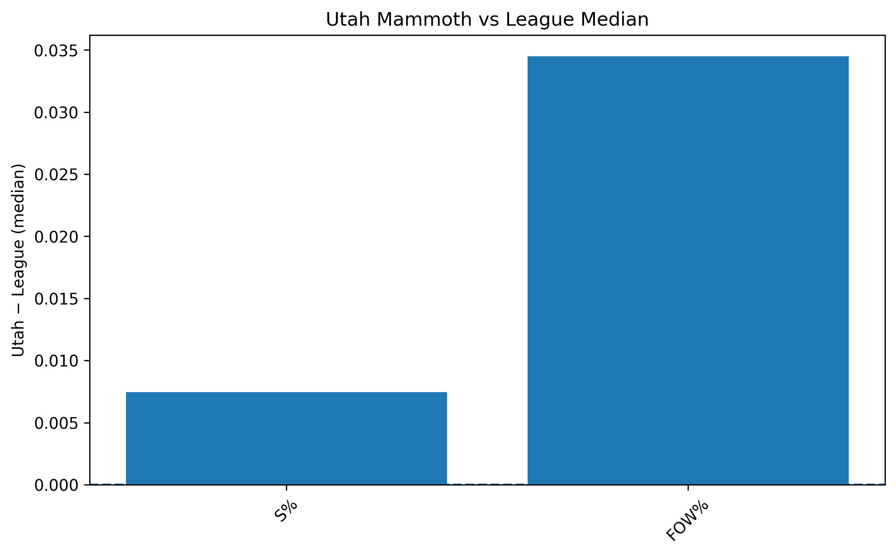
This figure focuses on efficiency-based metrics.
Key observations:
- The Mammoth overperform compared to the league in the percentage metrics.
Next, we will look at the Forwards (Centers, Left wings and Right wings) and Defensivemen to see what differences lie there as well as see what group explains the underperformance on the team scale.
4. Forward Group Analysis
4.1 All Forwards: Counting Metrics
(Figure: forwards_gaps_counts.png) 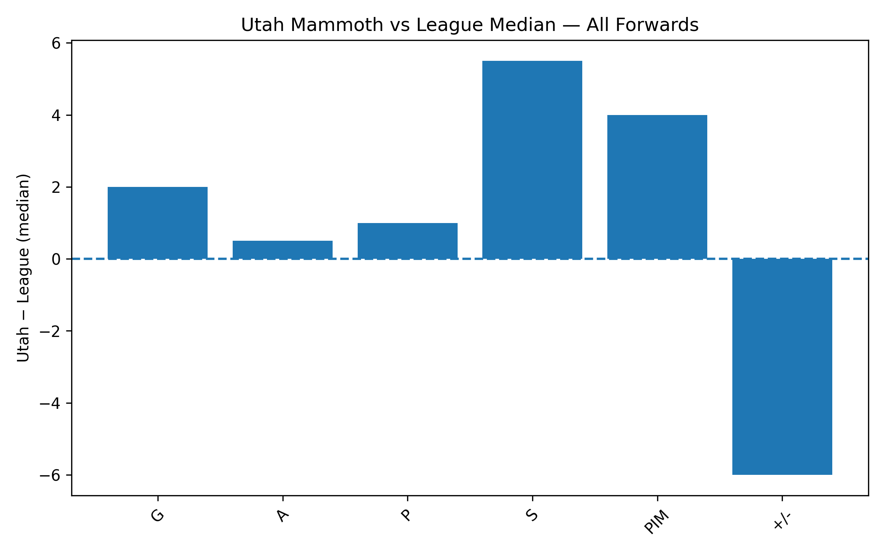
This section isolates forwards (C, L, R) to examine offensive production without defensive dilution.
Key observations:
- The only category in which the Mammoth underperform for the counting metrics is the plus/minus. Some of the other categories such as shots, goals points are higher than the difference based on team.
4.2 All Forwards: Percentage Metrics
(Figure: forwards_gaps_percentages.png) 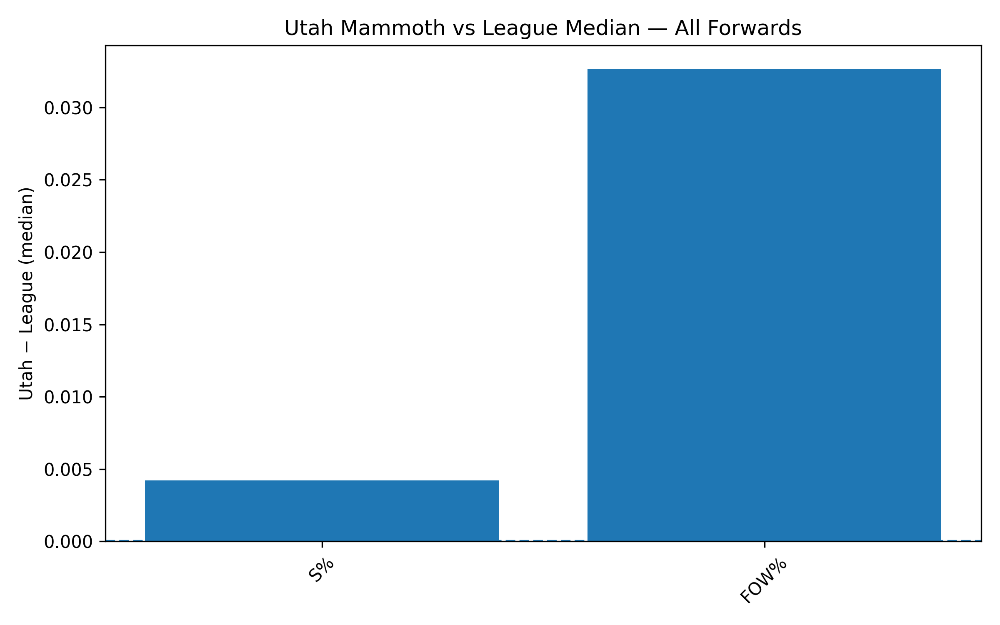 Key observations:
- There seems to be no significant difference when split into forwards when compared to the rest of the league.
5. Position-Specific Analysis
5.1 Centers (C)
Counting metrics:
C_counts.pngPercentage metrics:
C_percentages.png 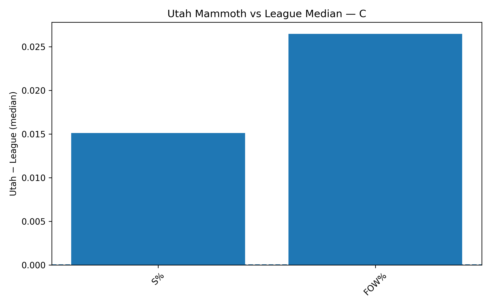 Key observations:
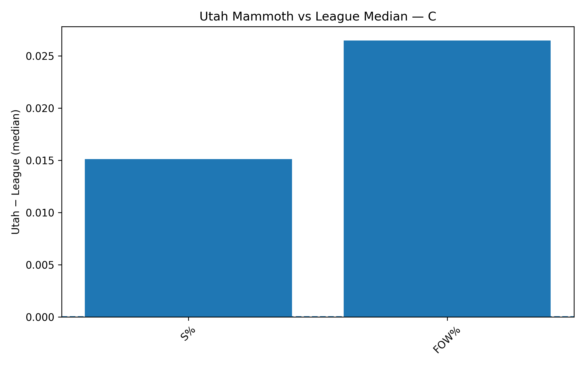 Key observations:The only area that the Centers are underperforming is in the plus/minus. No significant differences otherwise.
5.2 Left Wings (L)
- Counting metrics:
L_counts.png - Percentage metrics:
L_percentages.png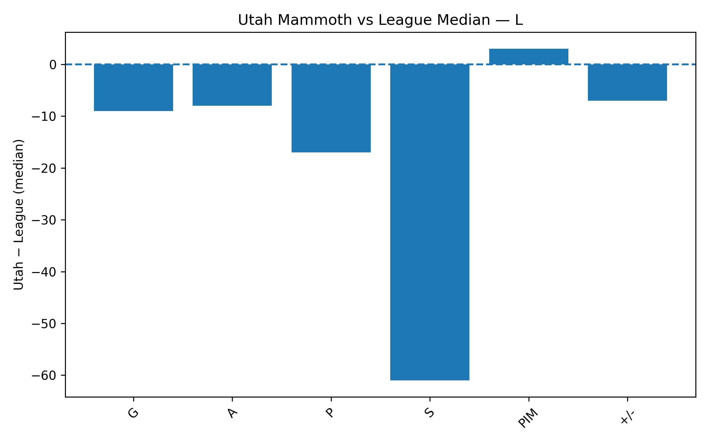 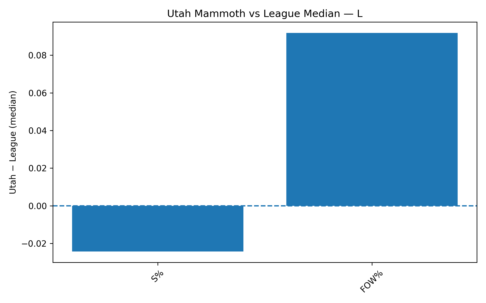
Key observations:
- The Left Wings for Utah only lead the league in Faceoff win percentage. An interesting search into this metric is that Utah’s Left wings are not taking very many shots, and the shots that they are taking are not going into the net often. If Utah were to pick one position to improve, it would be this one.
5.3 Right Wings (R)
- Counting metrics:
R_counts.png - Percentage metrics:
R_percentages.png
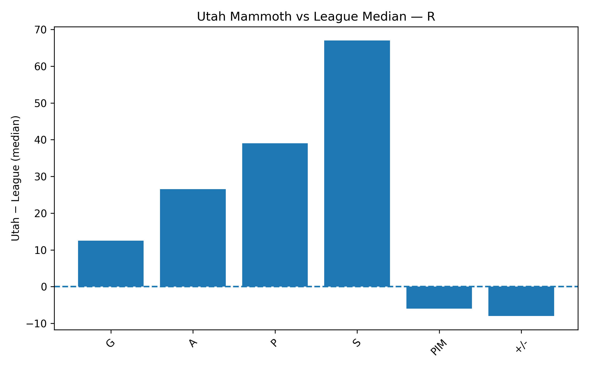 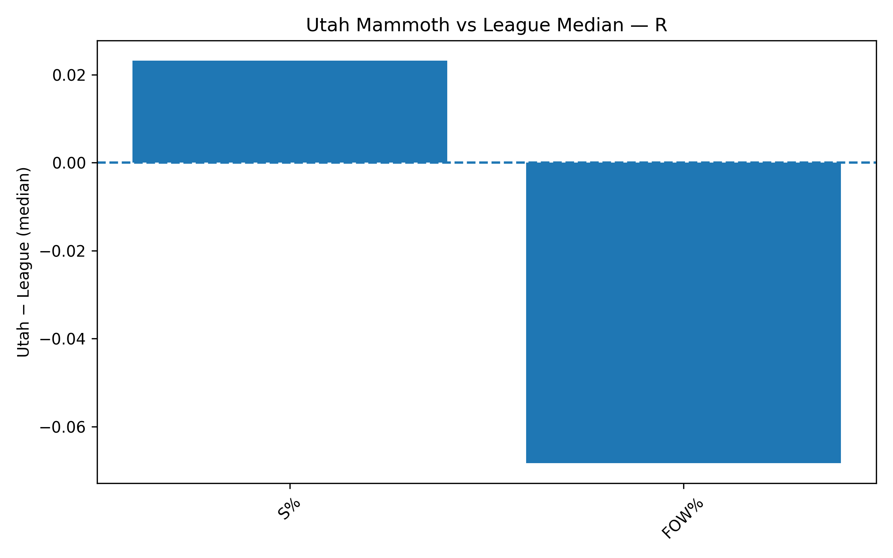 Key observations:
- Utah’s Right wings seem to be excelling in every metric except for Faceoff win percentage.
5.4 Defensemen (D)
- Counting metrics:
D_counts.png
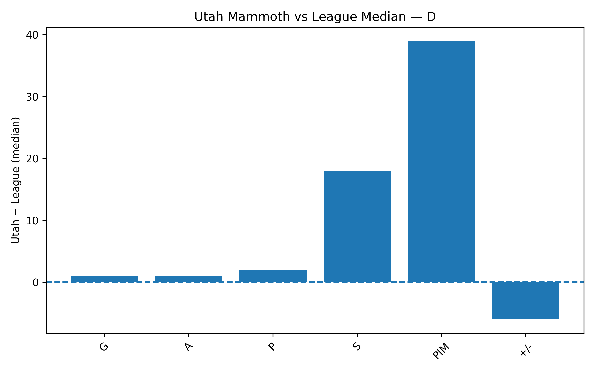
Key observations:
- Utah’s Defensivemen only really excell at penalty minutes. Utah’s defense also has a lower plus/minus, meaning that they allow more points and do not block players from having a scoring chance. It might payoff to have a more aggressive defense, but may also hurt that the defense spends more time off the ice.
6. Ice Time vs Production
(Figure: scatter_F_TOI_PGP.png) 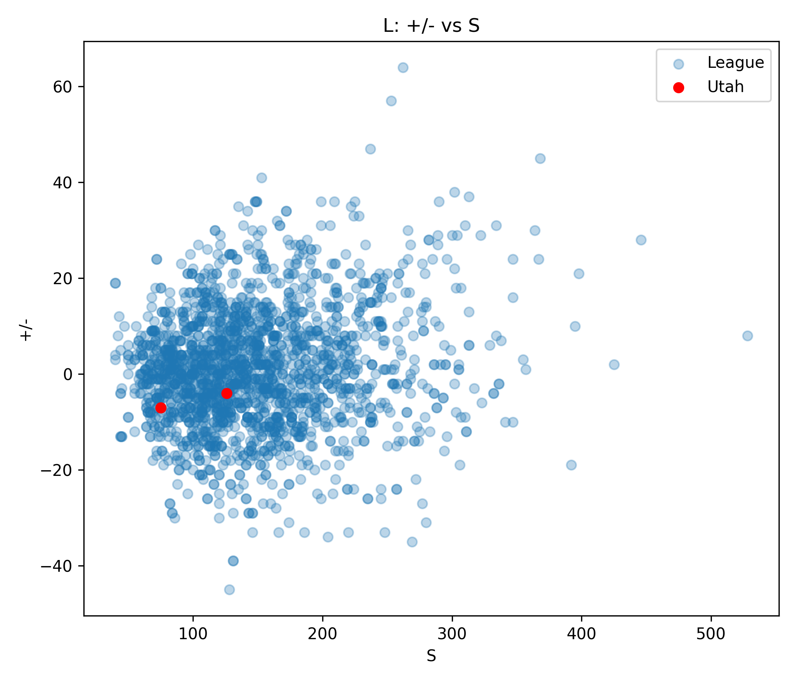
This scatterplot examines the relationship between Shots and Plus/Minus for Left Wings.
- Gray points represent the league
- Red points represent Utah Mammoth players
Key observations:
- This plot was created to explore exactly the left wing’s lack on the left side. As can be seen Utah is not taking many shots at all, and the plus minus is suffering.
7. Summary and Takeaways
7.1 Strengths
- Utah leads in Faceoff win, shots, and goals.
7.2 Weaknesses
- Utah’s Left wings in the forward need a lot of help in almost every metric. Utah also needs more help in plus/minus and strengthen defensive power and capability.
7.3 Roster Implications
- Using the streamlit application, and filtering for Forwards, five players have been determined that are not super high talent, but higher than league average that Utah could look to trading for. These players are:
- Karill Kaprizov
- Jake Debrusk
- Patrik Laine
- Nick Paul
- Lucas Raymond
8. Limitations and Next Steps
Limitations:
- Medians do not capture top-end talent
- League baseline includes Utah players
- Contextual effects (usage, teammates, competition) are not modeled, but play a large factor into the game.
Next steps:
- Exclude Utah from league baseline
- Normalize gaps (percent or z-score)
- Incorporate expected goals (xG) or on-ice metrics
- Include a Secondary dataset that includes age for every player to measure performance by age.